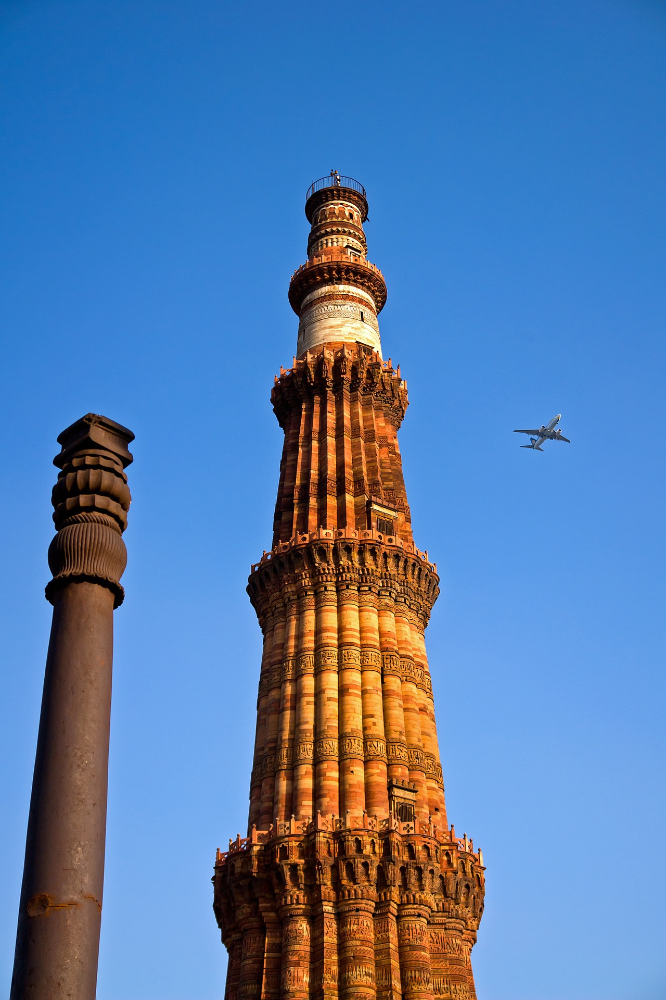
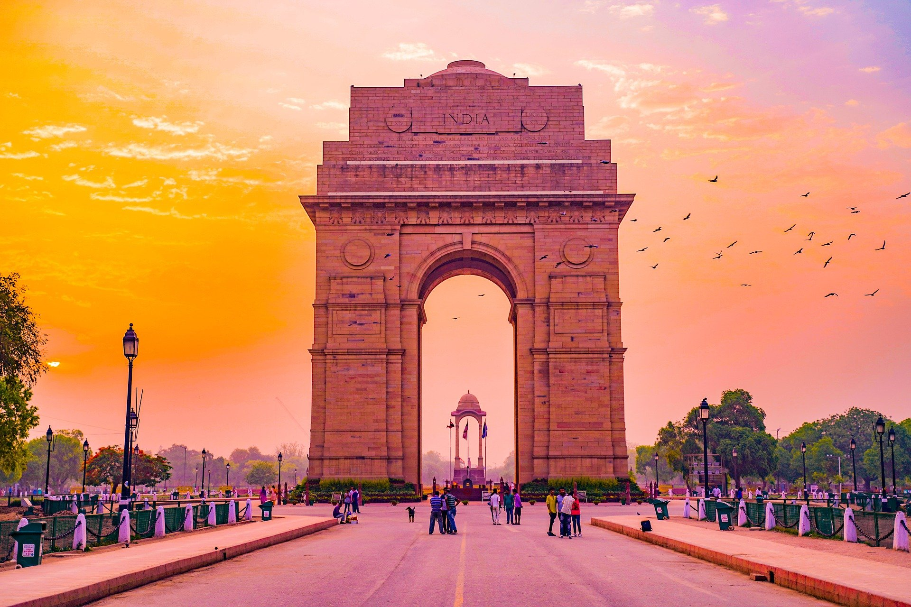
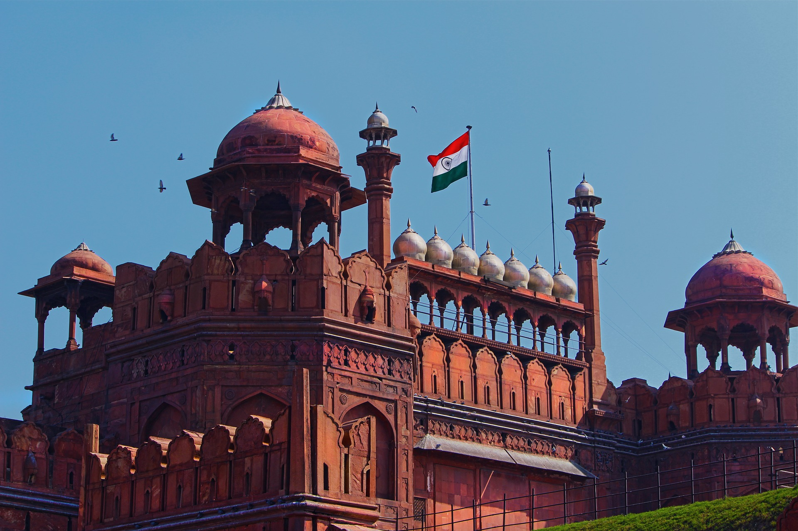
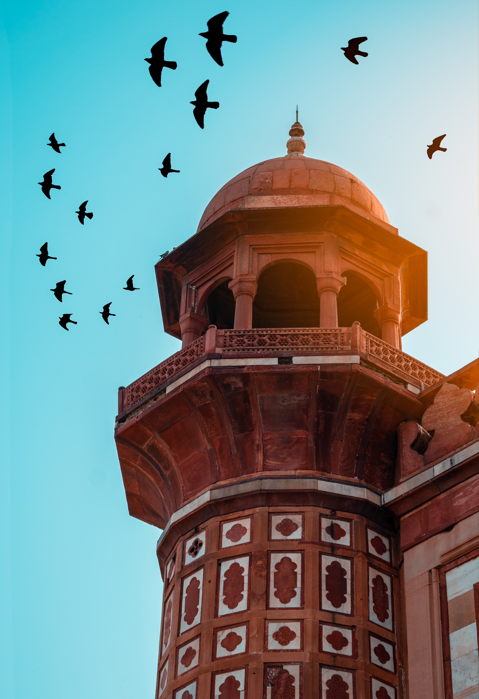

Some of the BEST places to visit in Delhi!!

The Qutb Minar, also spelled as Qutub Minar and Qutab Minar, is a minaret and "victory tower" that forms part of the Qutb complex,
a UNESCO World Heritage Site in the Mehrauli area of New Delhi, India.
The height of Qutb Minar is 72.5 meters, making it the tallest minaret in the world built of bricks.
The tower tapers, and has a 14.3 metres base diameter, reducing to 2.7 metres at the top of the peak. It contains a spiral staircase of 379 steps.

The India Gate is a war memorial located astride the Rajpath, on the eastern edge of the "ceremonial axis" of New Delhi, formerly called Kingsway.
It stands as a memorial to 70,000 soldiers of the British Indian Army who died in between 1914 and 1921 in the First World War,
in France, Flanders, Mesopotamia, Persia, East Africa, Gallipoli and elsewhere in the Near and the Far East, and the third Anglo-Afghan War. 13,300 servicemen's names,
including some soldiers and officers from the United Kingdom, are inscribed on the gate.
Designed by Sir Edwin Lutyens, the gate evokes the architectural style of the triumphal arch such as the Arch of Constantine,
in Rome, and is often compared to the Arc de Triomphe in Paris, and the Gateway of India in Mumbai.

The Red Fort is a historic fort in the city of Delhi in India that served as the main residence of the Mughal Emperors.
Emperor Shah Jahan commissioned construction of the Red Fort on an earlier 10th century fort by Anangpal Tomar on 12 May 1638,
when he decided to shift his capital from Agra to Delhi. Originally red and white, its painting is credited to architect Ustad Ahmad Lahori,
who also constructed the Taj Mahal. It was renovated between May 1639 and April 1648 based on an earlier fort.

Humayun's tomb is the tomb of the Mughal Emperor Humayun in Delhi, India. The tomb was commissioned by Humayun's first wife and chief consort, Empress Bega Begum,
in 1558, and designed by Mirak Mirza Ghiyas and his son, Sayyid Muhammad, Persian architects chosen by her. It was the first garden-tomb on the Indian subcontinent,
and is located in Nizamuddin East, Delhi, India, close to the Dina-panah Citadel, also known as Purana Qila, that Humayun found in 1533. It was also the first
structure to use red sandstone at such a scale. The tomb was declared a UNESCO World Heritage Site in 1993, and since then has undergone extensive restoration work,
which is complete. Besides the main tomb enclosure of Humayun, several smaller monuments dot the pathway leading up to it, from the main entrance in the West,
including one that even pre-dates the main tomb itself, by twenty years; it is the tomb complex of Isa Khan Niyazi, an Afghan noble in Sher Shah Suri's court of
the Suri dynasty, who fought against the Mughals, constructed in 1547 CE.